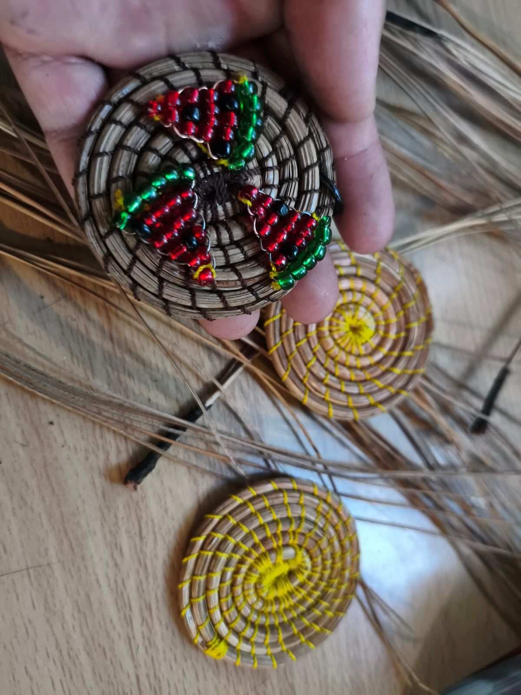
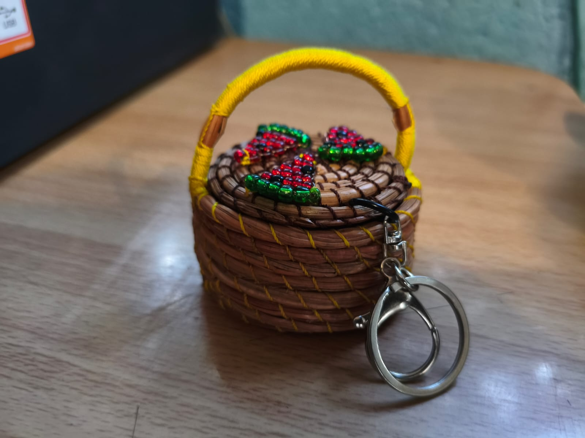
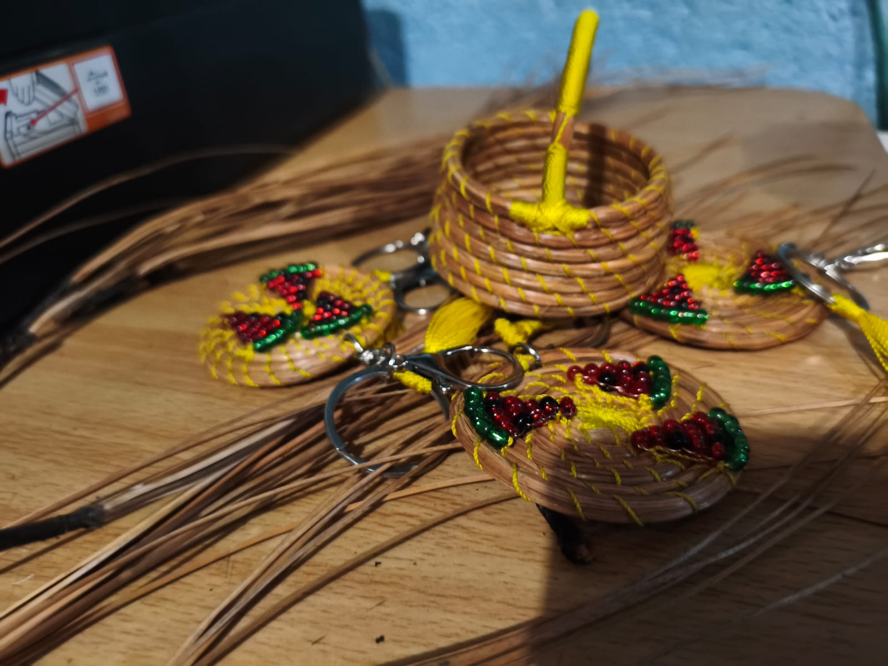
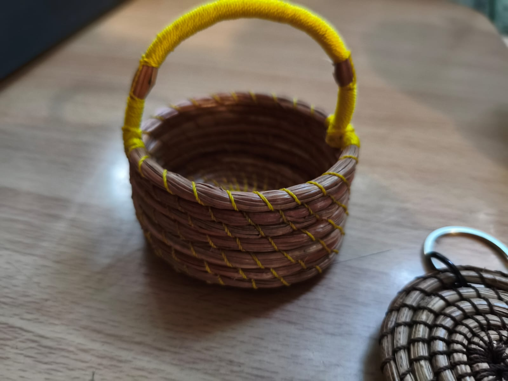
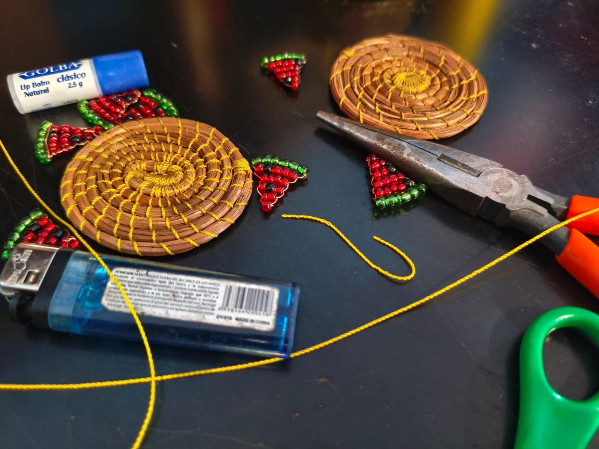
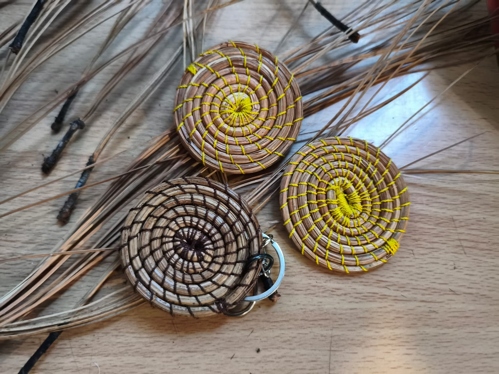

Canastas tejidas a mano con ocoxal.

Decoración artesanal con fibras naturales.

Productos ecológicos y sostenibles.
El proceso de elaboración de artesanías de ocoxal consiste en recolectar, seleccionar, lavar, hervir y secar las agujas de pino (hojas) para luego tejerlas manualmente con hilo cáñamo, aguja de canevá y tijeras. Esta técnica permite crear cestas, bolsos y joyería, combinando el material con latón o acero para mayor resistencia y diseño. Pasos detallados de elaboración: Recolección: Se seleccionan las hojas de pino más largas (15-25 cm), gruesas y fuertes que han caído naturalmente al suelo en bosques de Pinus montezumae. Limpieza y Tratamiento: Las hojas se lavan con agua y jabón para eliminar impurezas, hongos o basura. A menudo se hierven para aumentar su durabilidad y hacerlas más manejables. Secado: Se ponen a secar al sol hasta que obtienen un color marrón y una textura adecuada. Tejido (Técnica de Coiling): Utilizando aguja de canevá e hilo de cáñamo o cáñamo encerado, se agrupan las hojas y se tejen en espiral, dando forma a la pieza deseada. Acabado: Se añaden elementos como Shakira o detalles decorativos para personalizar artículos como fruteros, aretes, tortilleros y bolsos.



Las artesanías de ocoxal son una tradición mexiquense que transforma las acículas (hojas secas) del pino en piezas de cestería funcionales y decorativas. Originadas en zonas boscosas como El Oro y Donato Guerra, estas artesanías nacieron por la necesidad de generar ingresos y empoderar a mujeres rurales, promoviendo el aprovechamiento sustentable de la naturaleza.
El ocoxal (acículas o agujas secas de pino) representa un impacto cultural, económico y ecológico significativo en diversas comunidades de México, particularmente en los estados de México, Puebla, Michoacán y Jalisco. Su transformación en artesanías ha permitido el rescate de técnicas tradicionales y el empoderamiento comunitario. Aquí se detallan los principales impactos culturales: Revalorización de recursos naturales: El ocoxal es un producto forestal no maderable que tradicionalmente se veía como simple residuo o combustible. La artesanía de ocoxal transforma este "residuo" en objetos útiles y ornamentales como cestos, charolas, sombreros, bolsos, tortilleros y joyería. Identidad y tradición Mazahua: En áreas como el Estado de México, la recolección y tejido del ocoxal es una tradición arraigada en las comunidades mazahuas, reflejando su estrecha relación con el bosque. Empoderamiento de las mujeres: La elaboración de estas artesanías es liderada mayoritariamente por colectivos de mujeres, brindándoles una fuente de ingresos propia y reconocimiento social dentro y fuera de sus comunidades. Sustentabilidad y conexión con el entorno: La recolección del ocoxal ayuda a prevenir incendios forestales al retirar material combustible seco, promoviendo una cultura de cuidado ambiental. Aroma y memoria sensorial: Las piezas de ocoxal conservan un olor característico a pino que perdura, convirtiendo el objeto en una experiencia sensorial que evoca el bosque. Rescate de técnicas artesanales: Aunque se menciona que algunos conocimientos tradicionales pueden perderse, la actividad del ocoxal ha fomentado nuevas generaciones de artesanos que combinan la cestería con el uso de hilo de cáñamo, aguja y gran creatividad.